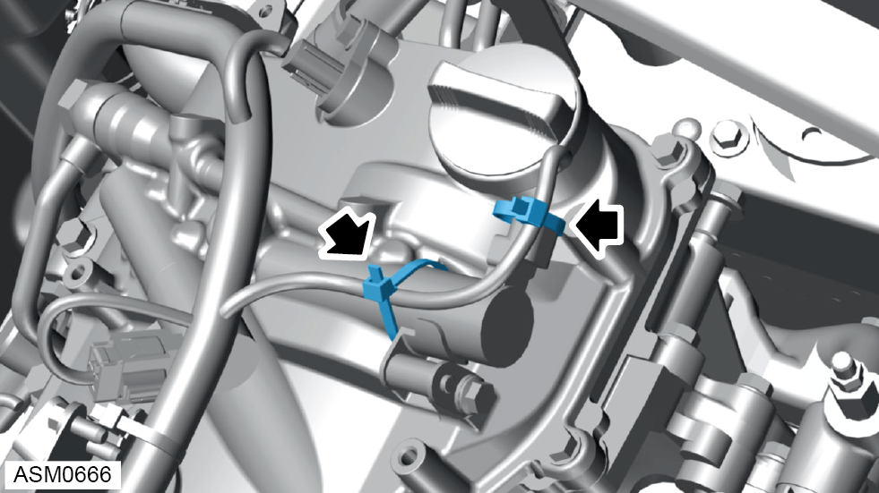
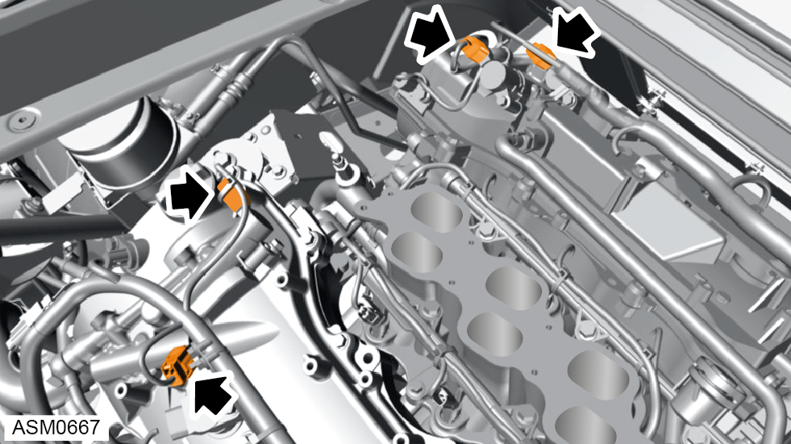
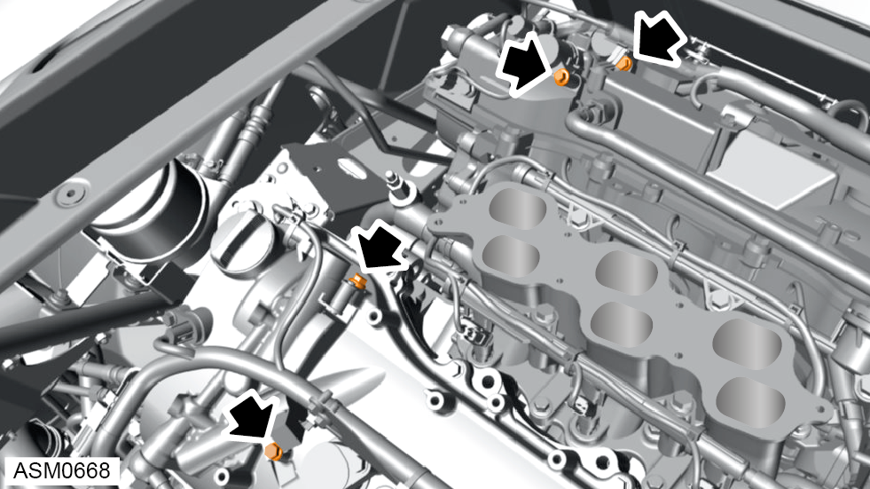
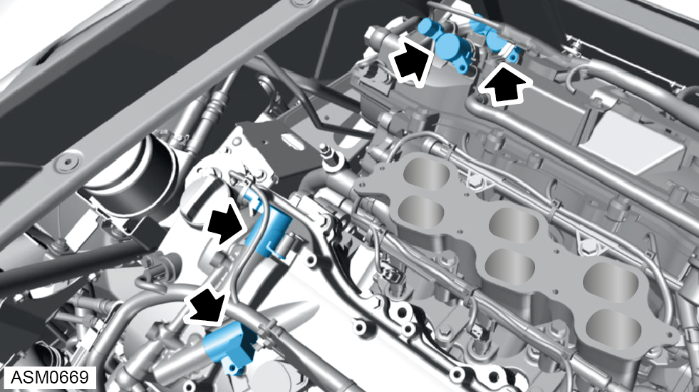

Valve Assembly - Cam Timing Control - V6
Print
Operation Code: 40.07.23-02
Removal
- Remove supercharger. Refer to procedure.
NOTE: Supercharger removal not required if only replacing RH bank 1 lower oil control valve.

- Remove and discard cable ties (x2) securing engine harness to oil control valve.

- Disconnect harness connectors (x4) secured to oil control valves.

- Remove bolts (x4) securing oil control valves to engine and remove locating tab. Torque 9 Nm.

- Remove oil control valves (x4).
Do not carry out further disassembly if removing for access only.
- Remove O-rings (x4) from oil control valves.
Installation
- Installation is the reverse of removal procedure except for the following:
- Renew O-rings if they are cracked or pinched.
- Apply light coat of oil to new oil control valve O-rings (x4).
- Replace discarded cable ties.